5040C24 air conditioner box - dismantle and rebuild at bench
- Path
- Procedures > 50 AUXILIARY UNITS > 5040 AIR CONDITIONING CASING AND COMPONENTS > 5040C air conditioner box and components > 5040C24 air conditioner box - dismantle and rebuild at bench
- Kind
- repair procedure (removal / refitting; the operation number is the code)
- Applies to
- all engines; all production periods
- Interactive page
- https://sloeber94.github.io/elrnDB-a156/en/#/3238333
Applies to: engines: 2.4 JTD 10v; all production periods; only with equipment: Air Conditioner
 Dismantling
Dismantling
 Reassembling
Reassembling1. Disconnect the electrical connection for the frost sensor.
 | Name | Connector |
|---|---|---|
1 | Frost sensor |
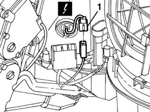
Applies to: engines: 1.6 TS , 1.8 TS, 2.5 V6, 1.9 JTD 8v , 2.4 JTD 10v; all production periods; only with equipment: Air Conditioner
1. Disconnect the electrical connection (1a) for the upper mixed air sensor, turn the sensor (1b) anticlockwise and remove it.
| Name | Connector |
|---|---|---|
1a | Upper treated air sensor |
2. Disconnect the electrical connection (2a) for the lower mixed air sensor, turn the sensor (2b) anticlockwise and remove it.
| Name | Connector |
|---|---|---|
2a | Lower treated air sensor |
3. Withdraw the retaining clips
4. Disconnect the electrical connections (4a, 4b, 4c) of the three actuators.
| Name | Connector |
|---|---|---|
4a | Air distribution actuator |
| Name | Connector |
|---|---|---|
4b | Air mixing actuator |
| Name | Connector |
|---|---|---|
4c | Air intake actuator |
5. Disconnect the electrical connection for the fan.
| Name | Connector |
|---|---|---|
5 | Passenger compartment ventilation fan |
6. Disconnect the electrical connections from the electronic variator (6a, 6b).
| Name | Connector |
|---|---|---|
6a | Fan speed' variator |
| Name | Connector |
|---|---|---|
6b | Fan speed' variator |
7. Remove the wiring harness assembly.
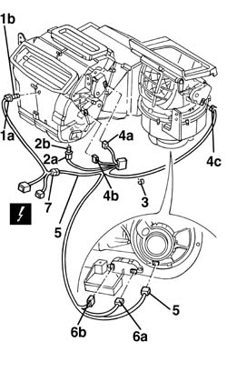
Applies to: all engines; all production periods; only with equipment: Air Conditioner
1. Remove the shroud cover.
2. Remove the heater radiator with mount.
3. Separate the radiator from the mount.
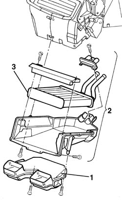
Applies to: all engines; all production periods; only with equipment: Air Conditioner
1. Undo the retaining bolt.
2. Turn the fan unit anticlockwise and remove.
3. Press the vibration-proof pads and separate the fan motor from the mount.
4. Remove the electronic variator
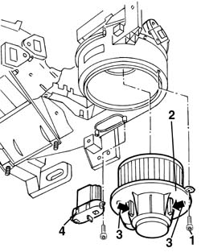
Applies to: all engines; all production periods; only with equipment: Air Conditioner
1. Remove the air mixer actuator
2. Remove the air distribution actuator
3. Recover the motor shaft
4. Remove the control linkage cover.
5. Remove the linkage unit.
6. Remove the air intake actuator.
7. Recover the control lever.
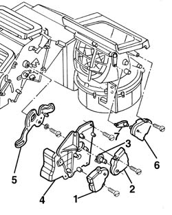
Applies to: all engines; all production periods; only with equipment: Air Conditioner
1. Release the rubber protection.
2. Remove the expansion valve cover.
3. Keep the upper plate.
4. Remove the coolant pipe connectors.
5. Remove the expansion valve.
6. Keep the lower plate.
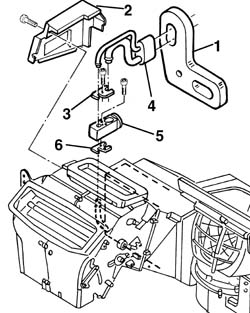
Applies to: all engines; all production periods; only with equipment: Air Conditioner
1. Remove the retaining clips using the appropriate tool.
 | Name | Country |
|---|---|---|
1 | Scraper blade | 1.823.014.000 |
2. Remove the lower half casing.
3. Release the evaporator.
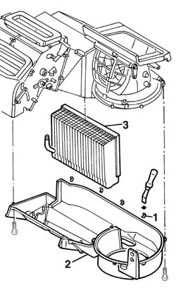
Applies to: engines: 2.4 JTD 10v; all production periods; only with equipment: Air Conditioner
1. Keep the frost sensor.
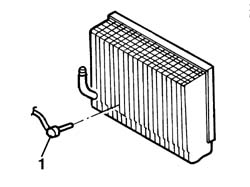
Applies to: engines: 1.6 TS , 1.8 TS, 2.5 V6, 1.9 JTD 8v , 2.4 JTD 10v; all production periods; only with equipment: Air Conditioner
1. Cut the rubber protection.
2. Cut the gasket.
Work with caution so that you are able to put the protection and gasket together again by joining the cut edges.
3. Withdraw the retaining bolt.
4. Remove the air duct.
5. Separate both halves of the air shroud.
6. Withdraw the recirculation flap from its pin.
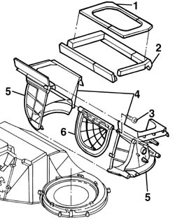
Applies to: all engines; all production periods; only with equipment: Air Conditioner
1. Undo the bolts securing the upper casing half.
2. Turn the upper casing upward and remove.
3. Cut the gaskets.
Work with caution so that you are able to put the gasket together again by joining the cut edges.
4. Separate both casing halves.
5. Withdraw the mixing flap from its pin.
6. withdraw the lower mixing flap from its pin.
7. Withdraw the front distribution flap from its pin.
8. Withdraw the upper distribution flap from its pin.
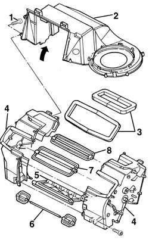
Applies to: all engines; all production periods; only with equipment: Air Conditioner
Reassembling
DismantlingCheck that the components are not damaged.
1. Fit the flaps to their pins.
Adjust to fit detent tooth (1a) into its seat (1b) on the pin.
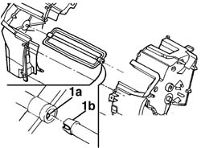
Applies to: all engines; all production periods; only with equipment: Air Conditioner
Refit both case halves.
Fit the gaskets.
Put the gaskets together by joining their cut ends carefully.
Fit the upper case half and secure with bolts.
1. Fit the recirculation flap to its pin.
Adjust to fit detent tooth (1a) into its seat (1b) on the pin.
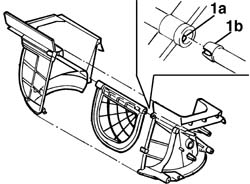
Applies to: all engines; all production periods; only with equipment: Air Conditioner
Fit both air shroud case halves together and tighten the retaining bolts.
Position the seal.
Put the gasket together by joining their cut ends carefully.
Applies to: engines: 2.4 JTD 10v; all production periods; only with equipment: Air Conditioner
Position the frost sensor on the evaporator.
Applies to: engines: 1.6 TS , 1.8 TS, 2.5 V6, 1.9 JTD 8v , 2.4 JTD 10v; all production periods; only with equipment: Air Conditioner
Place the evaporator in position.
Fit the lower case half and secure with the clips.
Press the clips home without forcing.
Position the expansion valve lower plate.
Place the expansion valve in position.
Position the connectors for the coolant pipes securing them together with the upper plate.
Fit the expansion valve cover.
Fit the rubber protection.
Fit the air recirculation flap control lever.
Fit the air recirculation actuator.
Fit the control linkage unit.
Fit the linkage unit correctly to the pins.
Fit the control linkage cover.
Fit the air distribution actuator motor shaft.
Fit the air distribution actuator.
Fit the air mixer actuator.
Fit the fan electronic variator.
Press the anti-vibration pads and reassemble the fan unit.
Insert the fan in its housing and turn it clockwise.
Tighten the retaining bolt.
Fit the heater radiator in its mount and secure to the shroud.
Fit the shroud cover.
Fit the wiring harness to the unit.
Connect the electrical connections and secure the wiring harness using the clips.
Fit the mixed air sensors, turn clockwise and connect.
Applies to: all engines; production: da 03/02 a 09/03, da 10/03; only with equipment: Air Conditioner
Dismantling
Reassembling5040D91 air conditioner system wiring harness - r r for versions with passenger airbag
1. Undo the bolts fixing the shield for the expansion valve.
2. Remove the shield.
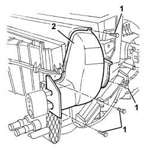
Applies to: all engines; production: da 03/02 a 09/03, da 10/03; only with equipment: Air Conditioner
1. Unscrew the nuts.
2. Remove the pipe connector.
3. Unscrew the bolts
4. Remove the expansion valve.
5. Recover the gaskets.
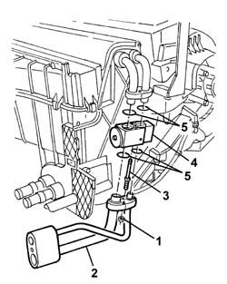
Applies to: all engines; production: da 03/02 a 09/03, da 10/03; only with equipment: Air Conditioner
1. Undo the fixing bolts and remove the left air mixture motor (1a) after having released the intake (1b).
2. Undo the fixing bolts and remove the air distribution motor (2a) after having released the toothed wheel (2b) from the cam rack.
3. Undo the fixing bolts and remove the right air mixture motor (3) after having release the intake (3b) and the cam (3c).
4. Undo the fixing bolts and remove the air recirculation and intake motor (4a) after having released the intake (4b).
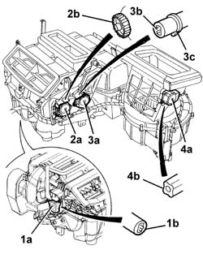
Applies to: all engines; production: da 03/02 a 09/03, da 10/03; only with equipment: Air Conditioner
1. Unscrew the bolt.
2. Rotate the air recirculation and intake assembly and remove it.
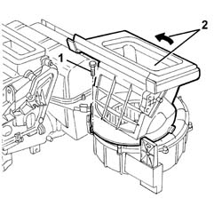
Applies to: all engines; production: da 03/02 a 09/03, da 10/03; only with equipment: Air Conditioner
1. Unscrew the bolts
2. Remove the protection for the cam and the levers.
3. Recover the spacer.
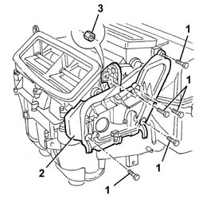
Applies to: all engines; production: da 03/02 a 09/03, da 10/03; only with equipment: Air Conditioner
1. Remove the cam (1a) releasing it from the lever pins (1b).
2. Remove the idler levers.
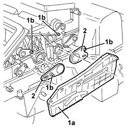
Applies to: all engines; production: da 03/02 a 09/03, da 10/03; only with equipment: Air Conditioner
1. Rotate the upper air mixture temperature sensors in an anti-clockwise direction and extract them.
2. Undo the bolts fixing the air intake assembly with flaps.
3. Remove the air intake assembly with flaps.
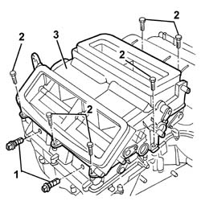
Applies to: all engines; production: da 03/02 a 09/03, da 10/03; only with equipment: Air Conditioner
1. Release the upper cover retaining springs.
2. Undo the bolts fixing the upper cover.
3. Remove the upper cover.
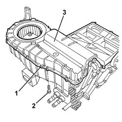
Applies to: all engines; production: da 03/02 a 09/03, da 10/03; only with equipment: Air Conditioner
1. Remove the evaporator.
2. Remove the filter elements.
3. If necessary, remove the air mixture flaps (3a), lifting them in the join area (3b) until they are released.
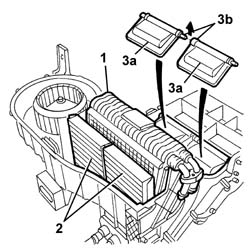
Applies to: all engines; production: da 03/02 a 09/03, da 10/03; only with equipment: Air Conditioner
1. Rotate the lower air mixture temperature sensors in an anti-clockwise direction and extract them.
2. Undo the bolts fixing the lower duct.
3. Remove the lower duct.
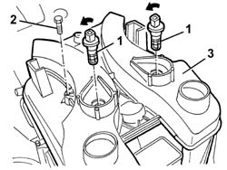
Applies to: all engines; production: da 03/02 a 09/03, da 10/03; only with equipment: Air Conditioner
1. Undo the bolts fixing the lower cover.
2. Remove the lower cover.
3. Remove the heater.
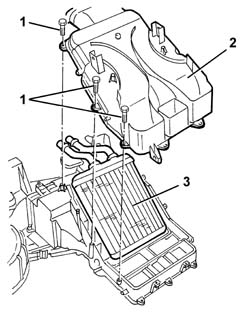
Applies to: all engines; production: da 03/02 a 09/03, da 10/03; only with equipment: Air Conditioner
1. Undo the bolt fixing the fan.
2. Rotate the fan and extract it.
3. Unscrew the bolts
4. Extract the speed governor.
5. If necessary, undo the bolts (5a) and remove the cover (5b) for the filter elements, after having released it from the retainer (5c).
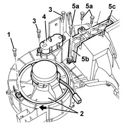
Applies to: all engines; production: da 03/02 a 09/03, da 10/03; only with equipment: Air Conditioner
Reassembling
DismantlingCheck that the components are not damaged.
If removed, position the cover for the filter elements, then secure it using the bolts.
Position the speed governor and secure it using the bolts.
Fit the fan and rotate it, then secure it using the bolt.
Fit the heater in position.
Fit the lower cover and secure it using the bolts.
Fit the lower duct and secure it using the bolts.
Fit and rotate the lower air mixture temperature sensors.
If removed, fit the air mixture flaps.
1. Fit the filter elements (1a) in position. The reference arrows (1b) should be facing as illustrated in the diagram (in the direction of the air flow).
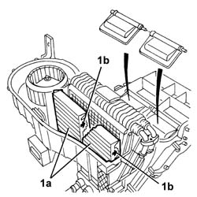
Applies to: all engines; production: da 03/02 a 09/03, da 10/03; only with equipment: Air Conditioner
Fit the evaporator in position.
Place the upper cover in position and secure it using the bolts and the retaining springs.
Fit and rotate the upper air mixture temperature sensors.
Position the air intake assembly with flaps and secure it using the bolts.
Position the idler levers.
Place the cam in position attaching it to the lever pins.
Place the protection for the cam and the levers in position, then secure it using the bolts.
Position and rotate the air recirculation and intake assembly and secure it using the bolt.
Fit the air recirculation and intake motor attaching it to the intake then secure it using the bolts.
Fit the right air mixture motor attaching it to the intake and cams, then secure it using the bolts.
Fit the air distribution motor engaging the toothed wheel with the cam rack, then secure it using the bolts.
Fit the left air mixture motor engaging it with the attachment, then secure it using the bolts.
Position the new gaskets on the expansion valve, then secure it using the bolts.
Position the pipe connector and secure it using the nuts.
Position the shield and fix it using the bolts
5040D91 air conditioner system wiring harness - r r for versions with passenger airbag
Applies to: all engines; all production periods; only with equipment: Right hand drive and Air Conditioner
Dismantling
Reassembling1. Disconnect electrical connections (1a) from the upper mixed air sensor, turn sensor (1b) anticlockwise and remove.
| Name | Connector |
|---|---|---|
1a | Upper treated air sensor |
2. Disconnect the electrical connections (2a) of the lower mixed air sensor, turn sensor (2b) anticlockwise and remove.
| Name | Connector |
|---|---|---|
2a | Lower treated air sensor |
3. Withdraw the retaining clips
4. Disconnect the electrical connections (4a, 4b, 4c) of the three actuators.
| Name | Connector |
|---|---|---|
4a | Air distribution actuator |
| Name | Connector |
|---|---|---|
4b | Air mixing actuator |
| Name | Connector |
|---|---|---|
4c | Air intake actuator |
5. Disconnect the electrical connection for the fan.
| Name | Connector |
|---|---|---|
5b | Passenger compartment ventilation fan |
6. Disconnect the electrical connections from the electronic variator (6a, 6b).
| Name | Connector |
|---|---|---|
6a | Fan speed' variator |
| Name | Connector |
|---|---|---|
6b | Fan speed' variator |
7. Remove the wiring harness assembly.
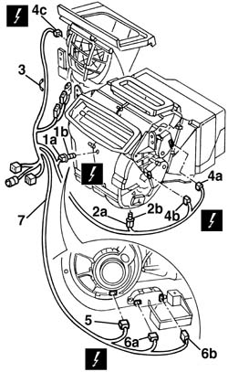
Applies to: all engines; all production periods; only with equipment: Right hand drive and Air Conditioner
1. Remove the shroud cover.
2. Remove the heater radiator with mount.
3. Separate the radiator from the mount.
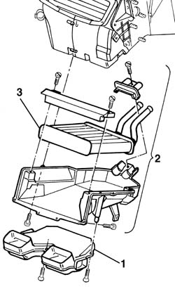
Applies to: all engines; all production periods; only with equipment: Right hand drive and Air Conditioner
1. Undo the retaining bolt.
2. Turn the fan unit anticlockwise and remove.
3. Press the vibration-proof pads and separate the fan motor from the mount.
4. Remove the electronic variable valve timing unit.
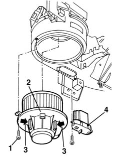
Applies to: all engines; all production periods; only with equipment: Right hand drive and Air Conditioner
1. Remove the air mixer actuator
2. Remove the air distribution actuator
3. Recover the motor shaft
4. Remove the control linkage cover.
5. Remove the linkage unit.
6. Remove the air intake actuator.
7. Recover the control lever.
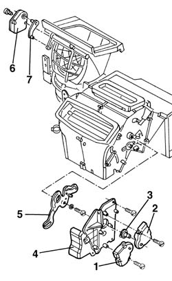
Applies to: all engines; all production periods; only with equipment: Right hand drive and Air Conditioner
1. Undo the bolts securing the lower casing half.
2. Remove the retaining clips using the appropriate tool.
| Name | Country |
|---|---|---|
2 | Scraper blade | 1.823.014.000 |
3. Remove the lower half casing.
4. Disconnect the evaporator complete with expansion valve and fittings.
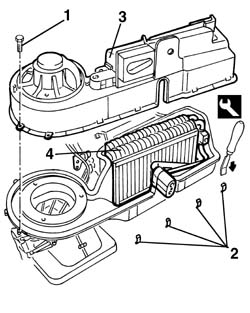
Applies to: all engines; all production periods; only with equipment: Right hand drive and Air Conditioner
1. Undo the pipe retaining nuts.
2. Disconnect pipe (2a) and recover the seals.
3. Unscrew studs.
4. Remove expanion valve (4a) and recover the seals.
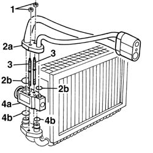
Applies to: all engines; all production periods; only with equipment: Right hand drive and Air Conditioner
1. Cut the rubber protection.
2. Cut the gasket.
3. Undo the retaining bolt.
4. Remove the air duct.
5. Undo the half-shell bolts.
6. Separate both halves of the air shroud.
7. Release and withdraw the recirculation flap from its pin.
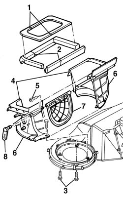
Applies to: all engines; all production periods; only with equipment: Right hand drive and Air Conditioner
1. Undo the bolts securing the upper casing half.
2. Turn the upper casing upward and remove.
3. Cut the gaskets.
4. Separate both casing halves.
5. Withdraw the mixing flap from its pin.
6. withdraw the lower mixing flap from its pin.
7. Withdraw the front distribution flap from its pin.
8. Withdraw the upper distribution flap from its pin.
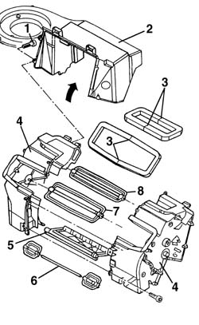
Applies to: all engines; all production periods; only with equipment: Right hand drive and Air Conditioner
Reassembling
DismantlingCheck that the components are not damaged.
1. Fit the flaps to their pins.
Applies to: all engines; all production periods; only with equipment: Right hand drive and Air Conditioner
Refit both case halves.
Position the gaskets.
Fit the upper case half and secure with bolts.
1. Fit the recirculation flap to its pin.
Applies to: all engines; all production periods; only with equipment: Right hand drive and Air Conditioner
Fit both air shroud case halves together and tighten the retaining bolts.
Position the gasket.
Fit the expansion valve with the new seals.
Tighten the studs.
Fit the hose with new seals.
Tighten the pipe bolts.
Refit the evaporator complete with expansion valve and fittings.
Fit the lower case half and secure with bolts and clips.
Fit the air recirculation flap control lever.
Fit the air intake actuator.
Fit the control linkage unit.
Fit the control linkage cover.
Fit the air distribution actuator motor shaft.
Fit the air distribution actuator.
Fit the air mixer actuator.
Fit the fan electronic variator.
Press the antivibration pads and reassemble the fan unit.
Insert the fan in its housing and turn it clockwise.
Tighten the retaining bolt.
Fit the heater radiator in its mount and secure to the shroud.
Fit the shroud cover.
Fit the wiring harness to the unit.
Connect the electrical connections and secure the wiring harness using the clips.
Fit the mixed air sensors, turn clockwise and connect.
Topics linked from this page (10)
- 5040D91 air conditioner system wiring harness - r r for versions with passenger airbag
- K86 Frost sensor
- K87 Lower treated air sensor
- K88 Upper treated air sensor
- M72A Fan speed' variator ( AIR CONDITIONING )
- M72B Fan speed' variator ( AIR CONDITIONING )
- N80 Air distribution actuator
- N81 Air mixing actuator
- N82 Air intake actuator
- N85 Passenger compartment ventilation fan